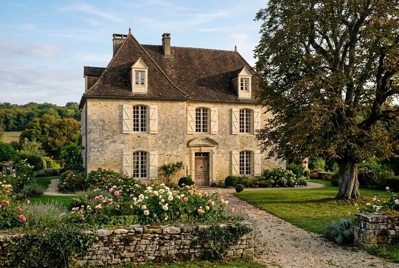

La région
Autour de Villars
Le Périgord vert porte bien son nom : c’est la partie la plus boisée et la plus calme du département, celle des vallées étroites et des villages de pierre blonde.
Sans échelle : chaque cercle est un temps de trajet depuis la maison.
À pied 20 minutes de marche au plus
Le château de Puyguilhem
Un château Renaissance aux toits d’ardoise, qui fait penser à ceux de la Loire ; le parc est en accès libre.
Ouvert d’avril à octobre
Le conseil de François : le parc se prête très bien au pique-nique.
Voir sur la cartePhoto Juliofsanguino, CC BY-SA 4.0

À quelques minutes 15 minutes de route au plus
Les grottes de Villars
Des peintures de la préhistoire et des salles de cristaux, en visite guidée d’une heure.
Voir sur la cartePhoto Mj.galais, recadrée par Andrew Dalby, CC BY-SA 3.0 L’abbaye de Boschaud
Les ruines d’une abbaye cistercienne au fond d’un vallon, libres d’accès toute l’année.
Voir sur la cartePhoto Père Igor, CC BY-SA 3.0 Saint-Jean-de-Côle
L’un des plus beaux villages de France : sa place, son château et son pont en dos d’âne.
Le conseil de Hélène : le dimanche matin, avant les visiteurs.
Voir sur la cartePhoto Père Igor, CC BY-SA 3.0 Photo Marie-Lan Nguyen, CC BY 4.0
_dordogne_-24-_photo_3_cropped.jpg){kind=link}
.JPG){kind=link}


À la demi-journée 45 minutes au plus
Le vélorail du Périgord vert
Dix kilomètres de draisine à pédales sur une ancienne voie ferrée, au bord de l’Isle.
Ouvert d’avril à octobre
Le conseil de François : réservez la veille en été ; le départ de 10 h est le plus frais.
Voir sur la cartePhoto Père Igor, CC BY-SA 3.0 Le château de Bourdeilles
Deux châteaux sur le même rocher, l’un médiéval, l’autre Renaissance, au-dessus de la Dronne.
Voir sur la cartePhoto Martialheland, CC BY 4.0 Périgueux
La cathédrale Saint-Front, les ruelles de la vieille ville et le musée d’art et d’archéologie du Périgord.
Voir sur la cartePhoto Père Igor, CC BY-SA 4.0
.JPG){kind=link}


À la journée au-delà
Le château de Hautefort
Un château classique posé sur sa colline, et ses jardins à la française.
Voir sur la cartePhoto Jebulon, CC0 Photo Benjamin Smith, CC BY-SA 4.0


Les marchés
Les jours de marché.
- Lundipas de marché proche
- Mardipas de marché proche
- MercrediPérigueux, le matin
- Jeudipas de marché proche
- VendrediBrantôme, le matin
- SamediThiviers, le matin
- DimancheSaint-Jean-de-Côle, le matinde juin à septembre
Au fil des saisons
Quand venir ?
Les rendez-vous de chaque saison.
Printemps
Les chemins fleurissent, les châteaux rouvrent leurs portes et le parc de Puyguilhem reverdit.
- Début juin · Les Rendez-vous aux jardins, partout
Été
La piscine, les longues soirées sur la terrasse, et un marché chaque matin dans un village voisin.
- Fin août · Le festival Sinfonia, Périgueux
Automne
Les cèpes et les châtaignes, les forêts qui roussissent, et des routes enfin tranquilles.
- Mi-septembre · Les Journées du patrimoine, partout
Hiver
Le feu dans la grande cheminée, les marchés au gras de Thiviers, les villages rendus à leurs habitants.
- Décembre · Le marché au gras, Thiviers
Venir
Jusqu’à la Maison du Noyer.
En voiture
Depuis Brantôme, direction Villars ; la maison est la dernière avant le bourg, sur la gauche, derrière le mur de pierre et le grand noyer.
La Maison du Noyer, lieu-dit le Noyer, 24530 Villars
En train
Gare de Périgueux, à 40 km (40 minutes).
En avion
Aéroport de Bergerac, à 95 km (1 h 25).
Pour tout le reste, horaires et billetterie : l’office de tourisme de Brantôme en Périgord.

La maison
La Maison du Noyer, pour poser vos sacs.
10 personnes · 5 chambres · dès 1 650 € la semaine